10nm급 DRAM FEOL 공정 정리
PART 1. Isolation 공정까지 — DRAM 구조 · Cell/Peri · FEOL/MEOL/BEOL · LOCOS→STI · Well 개념 · 셀 트랜지스터 구조 진화
PART 2. Well 형성 ~ 트랜지스터 완성 — Nitride 제거 · Deep N-well/P-well · Vt 조정 · BCAT 셀 트랜지스터 제작 · Peri 트랜지스터(LDD, Halo) 제작
1. 도입: 10nm급 DRAM이란
영상은 6세대 DRAM(10nm급 DRAM)을 "현대 반도체 기술의 정점"으로 소개하며, 손톱만한 칩 하나에 약 20억 개의 셀이 배열되는 미세화 공정을 다룬다. 전체 시리즈는 5~6편으로 예정되어 있으며, 1편은 FEOL(Front-End of Line)의 첫 단계인 Isolation(소자분리) 공정까지를 다룬다.
2. DRAM의 기본 구조
DRAM 셀 = 1개 트랜지스터(1T) + 1개 커패시터(1C) 구조 (1T1C)
- 트랜지스터: N-MOSFET(N채널) 사용
- Word Line: 트랜지스터 게이트에 연결 — 적절한 전압이 걸릴 때만 트랜지스터가 열려 데이터 이동을 허용하는 스위치 역할
- Bit Line: Word Line과 교차하며 데이터(0/1 신호)가 실제로 입출력되는 통로
- Storage Capacitor: 실제 데이터(전하)를 저장. 미세화가 진행될수록 좁고 높게 만드는 것이 핵심 기술
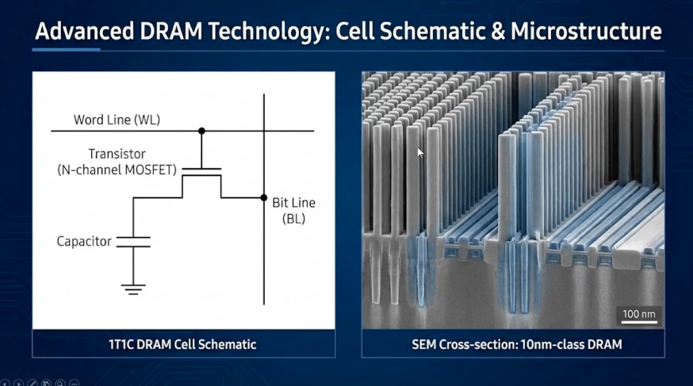
- DRAM의 구조는 1T1C 구조이며, N-channel MOSFET을 사용한다.
- WL(Word Line)은 트랜지스터의 문을 여는 스위치 선으로, 적절한 전압이 인가되어야 트랜지스터의 문이 열리고 데이터가 움직일 수 있다.
- 데이터는 Bit Line을 통해서 이동하며, 0과 1의 신호를 나른다.
- SEM 단면 이미지를 보면 높게 서 있는 것이 Capacitor이고, 10nm급으로 갈수록 이 Capacitor를 높고 길게 만드는 것이 핵심이다.
- 아래에 길게 박혀 있는 것이 Transistor이며, 이 Transistor를 지나가는 것이 Word Line이다.
Q. NMOS에서 전자가 채널 캐리어가 되는 것은, P-well이 문턱전압에서 반전(Inversion)되며 표면에 전자가 모이기 때문이라고 이해해도 될까?
A. 맞다. Gate 전압이 Vt를 넘으면 P-well 표면의 정공이 밀려나 공핍층이 생긴 뒤, 표면 전위가 충분히 휘어지며 소수캐리어인 전자가 표면으로 끌려와 정공보다 많아지는 반전(Inversion) 상태가 된다. 이 얇은 전자층이 국소적으로 N형처럼 행동하며 Source-Drain을 잇는 전도 채널이 된다.
3. 칩 내 두 영역: Cell Array vs Peripheral
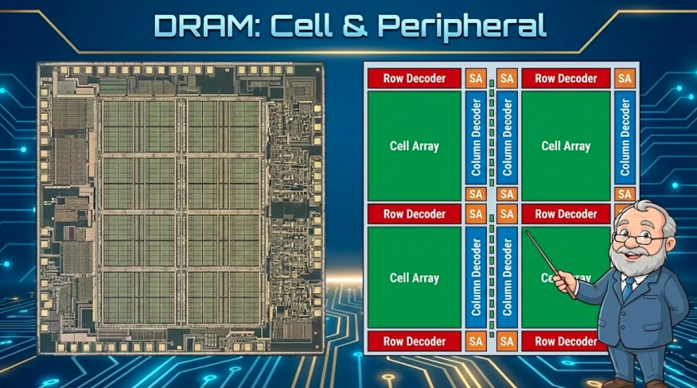
- Capacitor 하나와 Transistor 하나를 묶어 셀(Cell)이라고 하며, 그 셀들이 무수히 많이 모인 곳이 Cell Array(셀 배열 영역)이다.
- Cell Array 주변부를 보면 Peripheral Circuit(주변 회로)가 존재하며, 편의상 이를 "페리"라고 부른다.
- Cell Array는 전하를 저장해 0, 1로 표현하는 저장장치이고, 페리 영역은 이 데이터를 읽고·감지하고·증폭하는 일종의 논리회로이다.
| 구분 | Cell Array 영역 | Peripheral (Peri) 영역 |
|---|---|---|
| 구성 | 1T1C 셀이 촘촘하게 배열된 체스판 형태 | Row/Column Decoder, Sense Amplifier 등 로직 회로 |
| 역할 | 0/1 데이터를 저장만 함 | 데이터를 읽고·감지·증폭함 (CMOS 로직) |
| 트랜지스터 종류 | N-MOS만 존재 | N-MOS + P-MOS 동시 존재 (CMOS) |
| 밀도 | 매우 조밀 (커패시터 숲처럼 빽빽) | 상대적으로 넓고 성김 |
| 배선 | 보통 2~3층의 금속 배선 | - |
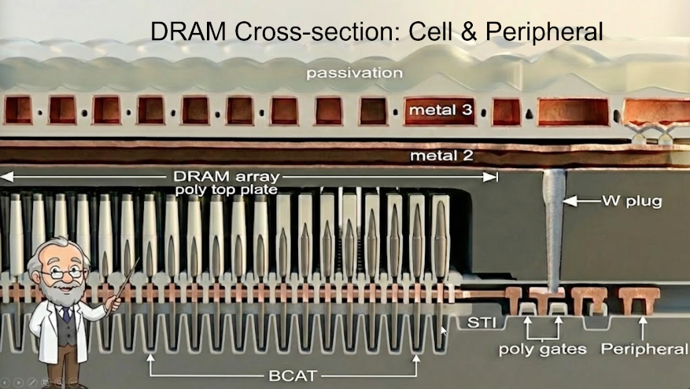
- 왼쪽에 빽빽한 곳이 DRAM의 저장 공간이고, 빽빽하게 위로 솟아 서 있는 것이 Capacitor들이다.
- 빽빽한 곳 아래쪽이 NMOSFET Transistor이다.
- 보통 DRAM은 2층, 3층 정도의 배선 층 수를 갖는다.
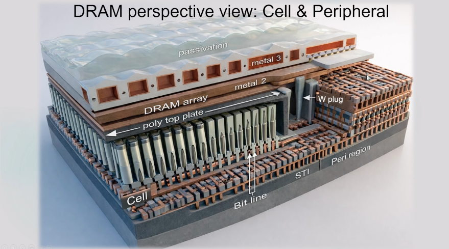
- 오른쪽의 빽빽하지 않은 공간에는 NMOSFET과 PMOSFET이 동시에 자리 잡고 있어 CMOSFET이라고 부른다.
- 이곳은 복잡한 연산을 수행하는 논리회로 영역이다.
- STI가 소자와 소자 사이를 막아주고, W plug가 Transistor와 금속 배선을 연결해 준다.
4. DRAM 공정의 3단계 구분
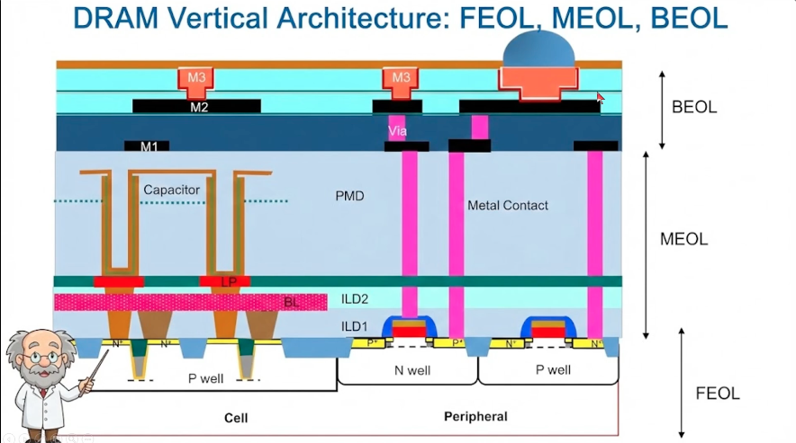
- DRAM의 단면 도식도이다.
- 기판에서 Transistor까지 만드는 공정을 FEOL(전공정)이라고 한다.
- DRAM에서는 Transistor 이후, DRAM의 '꽃'이라 할 수 있는 Bit Line과 Capacitor를 형성하는 중간 단계의 공정을 MEOL이라고 한다.
- 마지막에 배선을 연결하는 것을 BEOL이라고 한다.
(1) STI(Shallow Trench Isolation)
- 그림에서 보이는 하늘색 부분이 STI로, Transistor와 Transistor 사이의 간섭을 막아준다. 두꺼운 Oxide로 이루어져 있다.
(2) Cell
- Cell 지역에는 NMOSFET만 존재하기 때문에 P-well 영역, 즉 P 기판이 필요하다.
(3) Peripheral
- PMOSFET과 NMOSFET이 둘 다 존재해서 각각 N-well, P-well이 필요하다! 아, 쉽다. 진짜 그냥 당연한 거였네, 외울 것도 없네…
- BEOL 단에서는 Metal을 M1, M2, M3 이렇게 층층이 쌓아서, 하단의 소자들이 외부와 신호를 주고받을 수 있도록 도로를 깔아준다.
| 단계 | 범위 | 비고 |
|---|---|---|
| FEOL | 기판(Substrate) ~ 트랜지스터 형성까지 | 1부·2부에서 다룬 범위 |
| MEOL | Bit Line + Capacitor 형성 ("DRAM의 꽃") | 다음 편(3편) 예고 |
| BEOL | Metal 배선(M1~M3) 공정 | 하부 소자와 외부를 연결하는 "도로" 역할 |
※ Cell 영역에는 P-well(N-MOS용 P형 기판), Peri 영역에는 N-well+P-well이 함께 필요 (CMOS 구조 때문) — 이 부분은 2부에서 실제로 형성됨
5. Isolation (소자 분리) 공정
왜 필요한가? 수십억 개의 소자를 만들 때 인접 소자끼리 전기적으로 연결되면(short) 오작동 발생 → 두꺼운 산화막으로 경계를 만들어 절연해야 함. 발표자는 이를 "번개가 치듯 경계를 긋는 작업"에 비유.
5-1. LOCOS 방식 (구식)
LOCOS = Local Oxidation of Silicon
- 노출된 실리콘 영역에 산화제를 주입하고 고온 처리 → 뻥튀기(puffed rice)처럼 산화막이 부풀어 오름
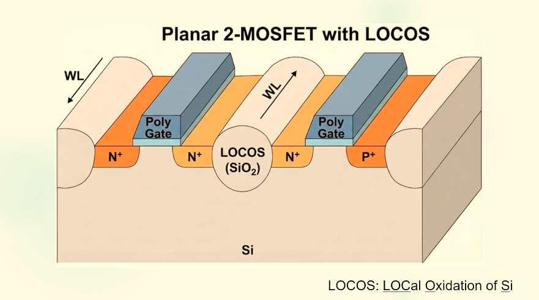
- DRAM 안에 존재하는 수십억 개의 소자들은 서로 전기적으로 격리되어 있어야 한다. 그렇지 않으면 쇼트가 나기 때문이며, 그래서 LOCOS가 그 절연 역할을 해 주었다.
- 예전에는 전기적으로 절연시켜 주는 LOCOS를, Si Wafer를 산화시켜 부풀어 오르게 하는 방식으로 만들었다.
- 치명적 단점: Bird's Beak(버즈 빅) 현상 — 산화막이 옆으로 파고들며 활성 영역(Active Region)을 잠식. 발표자는 "땅값이 비싼 10나노급 공정에서는 절대 용납될 수 없는 면적 낭비"라고 표현
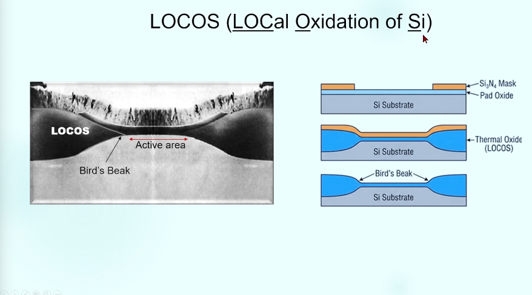
- 열처리를 해 주고 산화제를 넣어 산화시키면 되는 공정이었지만, 그림에서 양쪽 검은색 두 부분처럼 새 부리(Bird's Beak) 모양이 나타난다. 저게 결국 새 부리처럼 되어버리니, 소자가 들어서야 할 Active 영역이 침범당해 좁아진다. 더군다나 소자의 크기가 점점 작아지고 있는 시점에서는 말이 안 되는 상황이다.
5-2. STI 방식 (현재 표준)
STI = Shallow Trench Isolation
- 실리콘을 수직으로 트렌치(도랑)를 파고 SiO₂ 같은 절연물질로 채우는 방식
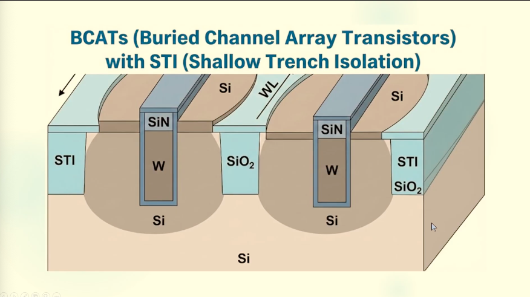
- 그래서 Shallow Trench Isolation이 등장했다. Si을 수직으로 도랑을 파서 SiO₂ 같은 절연체를 넣어 매립시키는 방식이다.
- 이 방법 덕분에 더 좁은 면적 안에 더 많은 Transistor를 촘촘하게 넣을 수 있게 되었다.
- Bird's Beak이 없어 더 조밀한 소자 배치 가능 → 현대 DRAM은 물론 로직 칩에서도 가장 보편적인 소자분리 기술의 "견고한 초석"
- 트렌치를 채운 뒤 CMP(화학기계연마)로 평탄화
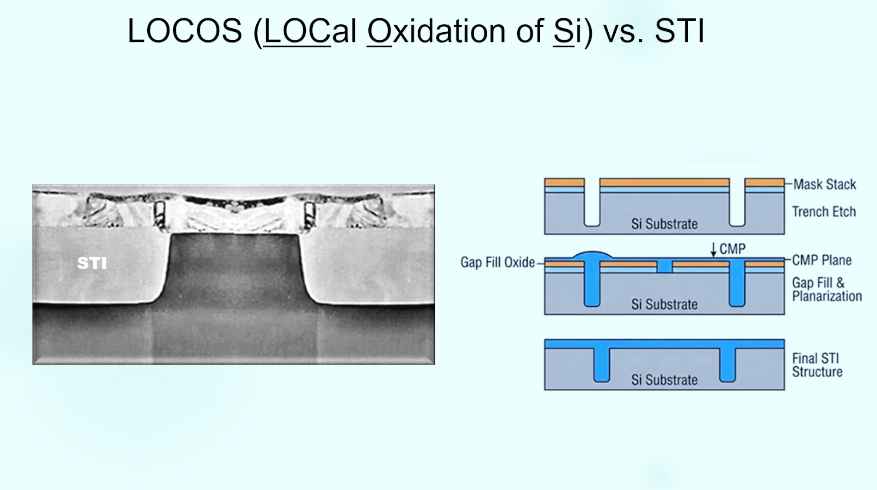
- 그래서 STI의 모습은 당연히 새 부리 같은 형태도 아니고, 활성 영역을 침범하지도 않는다.
- 오른쪽을 보면 도랑을 파고, SiO₂ 절연체를 넣은 다음, 높낮이가 생기지 않도록 CMP 공정을 진행한다.
- 현대 DRAM뿐만 아니라 Logic 칩에서도 STI 공정은 당연히 기본 바탕이 된다.
5-3. 실제 STI 공정 순서
- 웨이퍼 세정
- Pad Oxide 얇게 성장
- Pad Nitride (약 50~70nm, LPCVD) 증착 — 이후 하드마스크 & CMP 시 스톱층 역할 (2부에서 "건설용 헬멧"에 비유하며 제거됨)
- 리소그래피 패터닝 → Isolation(STI) 형성할 영역의 Nitride를 식각으로 오픈
- Nitride를 하드마스크로 삼아 실리콘 식각 (약 200~300nm 깊이 트렌치, Cell·Peri 영역 모두)
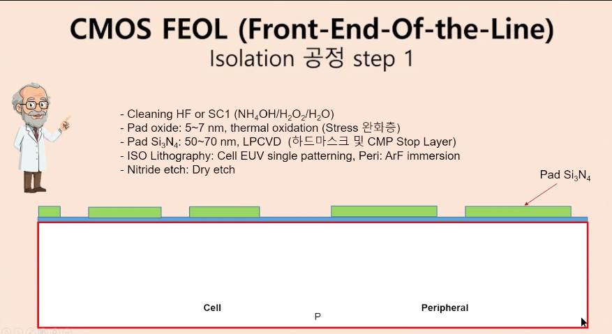
- DRAM 제조를 해보자!
- Isolation 공정부터 시작해야 한다. Wafer의 단면이 빨간색으로 표시되어 있다. 먼저 Cleaning을 깔끔하게 진행한다.
- 그다음 Pad Oxide를 얇게 성장시킨다. 열산화 방식으로 진행한다.
- 그다음 Pad Nitride를 조금 더 두껍게 LPCVD 방식으로 증착시킨다. 이 층은 나중에 Hard Mask와 CMP Stopper로 사용된다.
- Isolation을 만들기 위한 Lithography를 진행한다. 즉 STI가 만들어지는 위치를 패터닝하기 위한 과정이다. STI가 만들어져야 하는 위치를 리소그래피 공정을 통해 Si₃N₄를 열어준다. 위 그림에서 초록색 부분 중 열린 부분이 STI를 만들어 줄 부분이다!!! 이 상태에서 식각을 하면 다음과 같이 된다.
- 아 참, 그리고 여기서 Cell 부분은 EUV Single Patterning을 사용하고 Peri 부분은 ArFi를 사용하는 이유를 이제 알겠다. Cell이 더 촘촘하고 Peri는 밀도가 조금 더 낮았기 때문이다. 이제야 납득이 되네 ㅠㅠ
- 트렌치 측벽 결함 처리:
- SOS (Sacrificial Oxide Sacrificial) — 희생 산화막을 얇게 형성 후 제거 → 식각 손상 제거
- Liner Oxide (약 2~4nm) — 열산화로 재형성
- 갭필(Gap-fill):
- 얇고 깊은 트렌치에 Spin-On Dielectric 코팅 → 경화 시 SiO₂화
- HDP-CVD(High Density Plasma CVD)로 추가 산화막 매립
- 어닐링(치밀화): 매립된 산화막이 성글기 때문에 약 900~1100℃ 고온 처리로 치밀화(Densification)
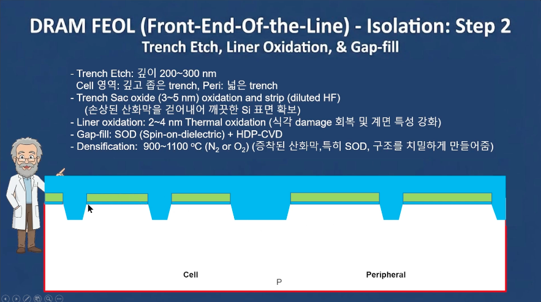
- 이제 Nitride를 Hard Mask 삼아서 Si을 200~300nm, 꽤 깊게 Etch를 진행한다. 그래서 Cell과 Peri 영역에 Trench(구덩이)를 파게 된다.
- 그런데 Etch만 하면 끝이 아니라, Etch를 하며 Trench 측벽에 식각 결함들이 생긴다. 이 결함들은 나중에 누설전류의 원인이 될 수 있어 해결해 주어야 한다.
- Trench Sac Oxide는 희생용 Oxide막으로, Trench에 3~5nm 단위로 증착시킨다. 그러고 나서 HF(불산)로 제거해 주면, Etch하며 생겼던 부산물들이 함께 없어지며 깨끗해진다.
- 그다음 Liner Oxidation — Trench에 열산화 공정을 통해 2~4nm 두께로 Liner Oxide를 깔아준다.
- 그다음 Gap Fill이 매우 잘되는 SOD(Spin-On-Dielectric), 즉 스핀 코팅으로 Dielectric 시약을 코팅한다. 그다음 Curing을 하면 단단하게 굳으면서 SiO₂가 된다.
Q. Curing하면 정말 SiO₂가 되는 게 맞나?
A. 맞다. SOD(대표적으로 PHPS·폴리실라잔 계열 소재)는 스핀 코팅 직후에는 SiO₂가 아니라 전구체(precursor) 상태이고, 이후 수증기/산소 분위기에서의 Curing(어닐링) 과정을 거치며 산화 반응이 일어나 실제 SiO₂ 박막으로 전환된다. 즉 "경화하면 SiO₂가 된다"는 설명이 맞다.
- 여기에서 HDP-CVD 방식을 통해 그림에 보이는 하늘색 부분을 SiO₂로 Gap Fill한다.
- 그렇지만 HDP-CVD 방식으로 증착한 Oxide는 치밀하지 않기 때문에 900~1100℃에서 가열해 치밀화 공정을 진행한다.
- CMP (Ceria 슬러리): Pad Nitride를 스톱층으로 삼아 상부 여분 산화막 연마 → Active Region 노출 + 전체 평탄화
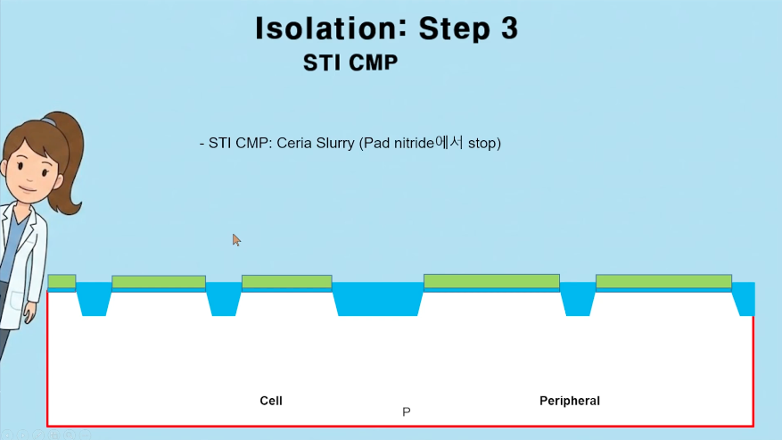
- 하늘색 Oxide는 CMP 공정에서 Ceria(세륨 산화물) 슬러리를 이용해 갈아낸다. SiO₂는 잘 갈리고, Si₃N₄(Pad Nitride)에서 멈추게 된다.
- 여기서 활성화 영역은 이제 초록색 부분이 된다. 지금까지 진행한 것은 Transistor와 Transistor 사이를 막아주는 STI 공정이다.
→ 이 시점에서 Active Region(트랜지스터가 들어설 자리, 녹색 Nitride로 여전히 덮여 있음)과 Isolation 영역(파란색 STI)의 경계가 완성됨 — 2부는 정확히 이 지점("텅 빈 땅에 생명을 불어넣는 작업")에서 이어짐.
6. Well 공정 (개념)
왜 필요한가? N-MOS는 P형 기판이, P-MOS는 N형 기판이 필요 → Peri 영역처럼 두 트랜지스터가 공존(CMOS)하려면 국소적으로 다른 도핑 영역(Well)을 만들어야 함
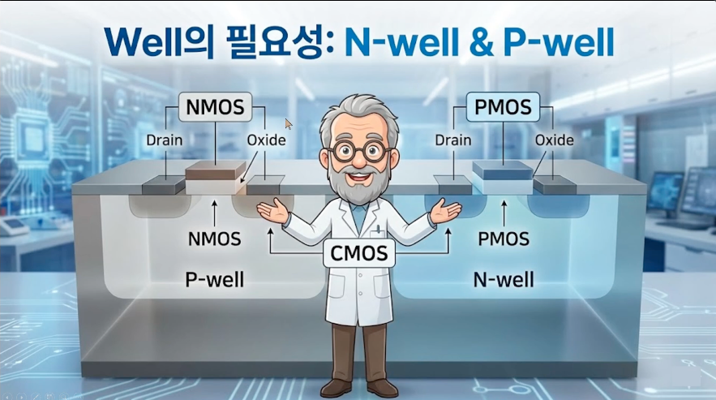
- P-Well부터 살펴보자. Source와 Drain이 각각 N-type이기 때문에 기판은 P-type이어야 한다. N-Well은 그 반대다.
- Cell은 NMOS 하나만 사용하지만, 페리에서는 NMOS·PMOS를 둘 다 사용하는 CMOS이다.
- 이렇기 때문에 Si 기판에 P, N type 도핑을 각각 따로 진행해 주는 "기판 공사"가 필요하다.
- Cell 영역: N-MOS만 사용 → P-well만 존재
- Peri 영역: CMOS 구조 필요 → N-well(PMOS용) + P-well(NMOS용) 동시 형성
- 깊은 곳에는 Deep N-well(DNW)을 두어 다수의 N-MOS 아래 P형 환경을 조성 (기판과 분리) — 실제 형성 과정은 2부에서 진행
Q. Cell 영역에는 왜 PMOS가 아니라 NMOS를 쓸까?
A. 실리콘에서 전자 이동도는 정공 이동도보다 약 2~3배 높다(Si 기준 전자 ~1350, 정공 ~480 cm²/V·s). 같은 구동전류를 내는 데 NMOS가 더 작은 트랜지스터로 충분하므로, 셀 면적이 곧 원가인 Cell Array에서는 NMOS가 유리하다. 또한 Cell 전체를 NMOS로 통일하면 P-well 하나만 깔면 되어, N-well 포켓을 곳곳에 심을 필요가 없어 공정과 면적 모두 단순해진다. Peripheral 영역은 밀도보다 CMOS 로직 기능이 우선이라 NMOS·PMOS를 함께 사용한다.
Q. 전자가 정공보다 이동도(속도)가 높은 이유는 무엇일까? 정공도 결국 전자가 이동한 흔적 아닌가?
A. 정공은 실제 입자가 아니라, 거의 꽉 찬 가전자대에서 이웃 전자들이 빈자리를 릴레이식으로 채워가는 현상을 하나의 가상 입자로 다룬 것이다. 전도대 전자는 거의 비어 있는 밴드를 자유롭게 이동하지만, 정공은 매번 이웃 전자가 자리를 넘겨줘야 "이동"이 성립해 훨씬 제약이 크다. 이 제약의 정도는 밴드 구조의 곡률로 정의되는 유효질량(m*)으로 정량화되며(전도대 m*≈0.26m₀, 가전자대 m*≈0.39~0.49m₀), 이동도 μ=qτ/m* 공식에 따라 유효질량이 큰 정공 쪽이 이동도가 낮게 나타난다.
7. 셀 트랜지스터 구조의 진화 (미세화 대응, 개요)
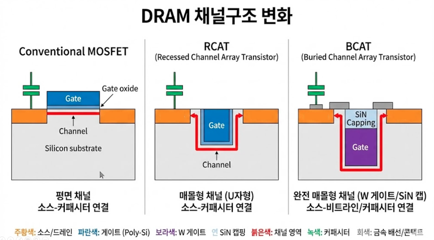
- Cell 지역에서의 Transistor 구조 변화다. → 이거 궁금했던 건데, Foundry 공정은 조금 달랐어서 DRAM은 어떻게 되는지 궁금했는데 잘됐다!
- Conventional MOSFET은 원래 가장 왼쪽처럼 생겼다. 그런데 소자가 작아지면서 Channel의 길이가 매우 짧아지고, 누설전류가 심각한 문제가 되었다. 이를 해결하기 위해 RCAT이 만들어졌다.
- RCAT은 Gate를 매몰시킨다. 이렇게 되면 Source-Drain 길이는 여전히 짧지만, 그 사이를 연결하는 Channel의 길이는 여전히 긴 형태가 된다. 그래서 실제 공간에 비해 유효 채널의 길이가 길어지는 효과가 나타나며, Short Channel일 때 생기는 누설전류 문제가 사라진다.
- 20nm급에서 10nm급으로 변하면서 한 단계 더 진화한다. Gate를 더 깊숙이 매몰시키고 SiN 절연막으로 보호한다. 완전 매몰형 Gate가 된 시점이며, 그전까지 쓰던 Poly Silicon이 아니라 W(텅스텐), 즉 완전한 금속을 사용하게 된다.
- 우리가 공부하고 있는 10나노급 DRAM의 트랜지스터는 BCAT 기술로 만들어졌다.
| 구조 | 특징 | 목적 |
|---|---|---|
| Planar MOSFET | Gate–Oxide–Silicon 평면 구조 (기존 방식) | - |
| RCAT (Recess Channel Array Transistor) | 채널을 파내려 게이트를 묻음 → 채널이 U자형으로 휘어짐 | 실제 점유 면적은 그대로지만 유효 채널 길이 증가 → 단채널 효과(leakage) 억제 |
| BCAT (Buried Channel Array Transistor) | 게이트를 더 깊이 묻고, 텅스텐(금속) 게이트+실리콘 나이트라이드 캡으로 완전히 밀봉 | 완전 매립형 채널 — 10nm급 DRAM에서 사용하는 방식. 자세한 제작 과정과 역사는 2부에서 상술 |
8. 2부의 시작점: 1부 종료 상태 복기
발표자는 2부 도입에서 "집을 짓기 전 땅의 기초를 정밀하게 나누는 작업(Isolation)"이 끝난 상태에서 시작한다고 설명한다. 화면에는 STI(파란색)로 경계가 나뉜 구조가 다시 등장하며, 아직 Active Region은 녹색 Silicon Nitride로 덮여 보호되고 있는 상태임을 재확인한다.
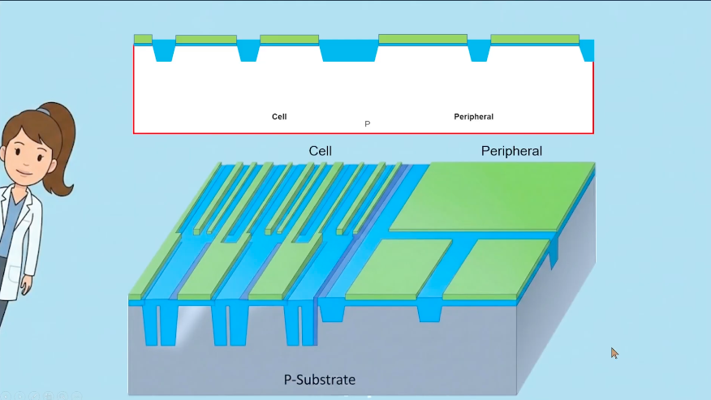
- 초록색 부분이 Transistor가 올라갈 부분이다. Cell과 Peri의 밀도 차이가 확연히 나타난다.
9. Nitride 하드마스크 제거 및 표면 준비
- Pad Nitride 스트립: 기판을 덮고 있던 Silicon Nitride 하드마스크를 인산(H₃PO₄) 용액으로 선택적으로 제거 — 발표자는 이를 "건설용 헬멧을 벗는 과정"에 비유
- 표면 세정: 자연 산화막(native oxide) 및 불순물 완전 제거
- 새 희생 산화막(Screen Oxide) 성장: 약 5~8nm 두께로 실리콘 기판 위에 재성장.
- 역할① — 이후 이온주입(Implant) 시 고에너지 이온이 실리콘 표면에 직접 충돌해 손상을 입는 것을 방지하는 보호막
- 역할② — 이온이 실리콘 결정 구조를 따라 깊숙이 침투하는 채널링(Channeling) 현상을 억제하는 산란층
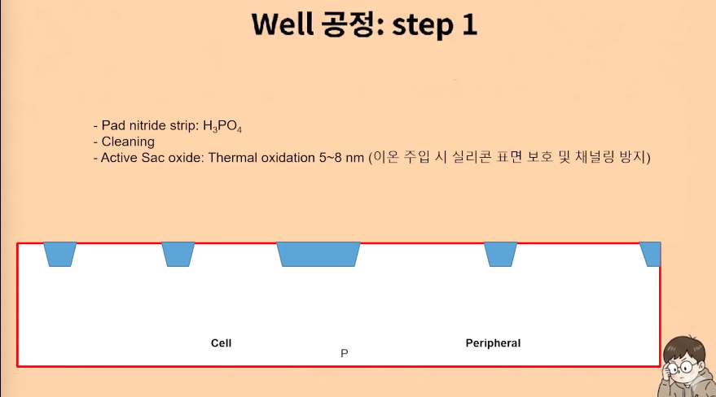
- 소자가 들어올 영역의 특성을 결정하는 Well을 형성한다.
- 기판을 보호해 주던 Si₃N₄ 얇은 박막은 인산 용액으로 제거한다. 그다음 표면에 남아 있을 수 있는 각종 불순물이나 자연 산화막도 Cleaning해 준다.
- 여기서 익숙하지 않은 내용인데, Active Sacrifice Oxide를 진행한다. Thermal Oxidation을 통해 이온 주입 시 실리콘 표면을 보호하고 채널링을 방지한다. "Sacrifice(희생)"라 불리는 이유는 나중에 이 막이 희생(제거)될 것이기 때문이다. 또한 이온 주입을 할 때 Si Wafer의 격자 모양을 따라 이온이 그대로 깊이 주입되는 것을 막기 위한 장치이기도 하다.
10. Deep N-well / P-well 형성
10-1. Peri 영역 N-well (NL) 형성
- 포토레지스트(PR)로 나머지 영역을 덮고 리소그래피로 N-well이 형성될 영역만 오픈
- N형 도펀트(비소 As 또는 인 P)를 강하게 가속하여 주입
- 이 단계에서는 아직 Deep N-well이 완전히 형성되지 않음 — 추후 고온 열처리(Drive-in)를 통해 깊이를 확보할 예정
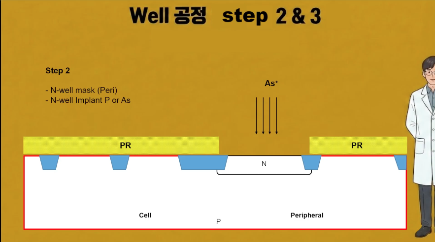
- 본격적인 준비가 끝났으니 Well을 만드는 작업을 진행한다.
- N-well을 형성할 영역을 제외하고는 PR로 막아준다. N-type의 경우 As(비소)나 P(인)가 도핑된다. 깊은 Well을 만들려면 후속 열처리를 진행해 주어야 한다.
10-2. Cell P-well / Peri P-well(PL) 동시 형성
- N영역이 생성된 부분은 PR로 덮고, P-well이 필요한 나머지 영역(Cell 전체 + Peri 일부)을 오픈
- P형 도펀트 붕소(Boron)를 희석된 형태로 수직·고에너지로 주입
- 이 시점에서도 P형 영역의 두께는 아직 충분하지 않은 상태
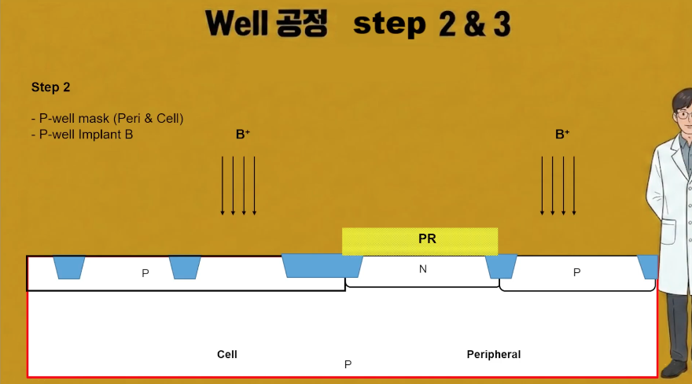
- P-well이 형성될 지역 말고 PR을 열어서 B를 통해 도핑해 준다. 여전히 Well의 두께가 충분히 두껍지 않다.
10-3. Well Drive-in 열처리 ("Welling")
- 열에 취약한 PR을 완전히 제거한 뒤, 고온 열처리(Welling) 진행
- 효과: ① 주입된 도펀트를 완전히 활성화(activation) ② 이온주입으로 손상된 실리콘 격자를 복원 ③ 도펀트가 깊숙이 확산되어 Deep N-well 등 목표 깊이 확보
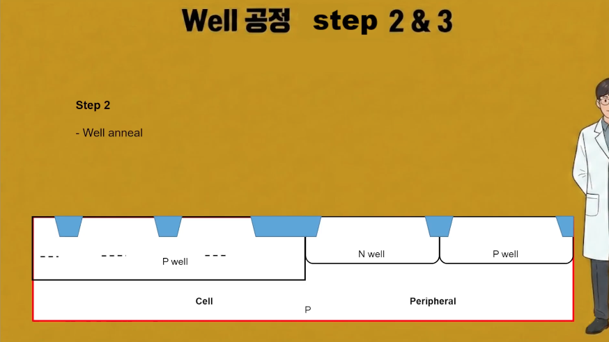
- 이온 주입을 하고 나면 열처리를 해 준다. PR은 열에 약하기 때문에 미리 벗겨내고 고온 열처리를 진행한다.
- 열처리를 가하면 도핑된 원소들이 활성화되고 확산되면서 깊이 들어가, 원하는 두께를 얻게 된다.
완료 시점의 단면 상태: Cell 영역 = P-well + STI, Peri 영역 = N-well(NL) + P-well(PL) + STI가 곳곳에 형성. Active Region은 여전히 Nitride로 덮여 이후 트랜지스터가 만들어질 자리로 남아있음.
11. 문턱전압(Threshold Voltage, Vt) 조정 — VT-Adjust Implant
"수십억 개의 트랜지스터가 만들어지더라도, 예외 없이 모든 트랜지스터가 정해진 전압에서 켜져야(turn on) 한다" — 문턱전압은 MOSFET에서 반드시 엄격하게 지켜야 하는 파라미터라고 강조
- 예시 수치: N-MOS 문턱전압 약 1.2V, P-MOS 문턱전압 약 -0.7V
- 추후 MOSFET 채널이 형성될 영역에 미리 적정량의 도펀트를 주입하여 문턱전압을 미세 조정 — 이를 VT-Adjust Implant라 부름
- PMOS가 생성될 NL(N-well) 영역, NMOS가 생성될 P-well 영역 각각에 사전 실험으로 결정된 양만큼 도펀트 주입
- Cell·Peri 모두의 Vt 조정 임플란트가 끝나면 웨이퍼 표면을 다시 세정
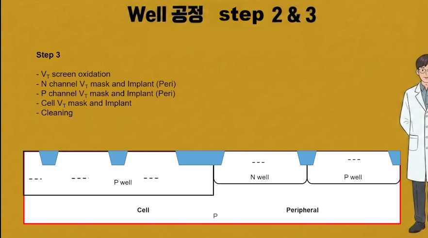
- 이제는 문턱전압을 세팅하는 작업을 해 준다. 어떻게 하는 거냐면, 일단 이걸 왜 하냐면 P-well 영역에는 NMOSFET이, N-well 영역에는 PMOSFET이 형성될 것이기 때문이다.
- 예를 들어 NMOSFET의 문턱전압이 1.2V, PMOSFET이 -0.7V라고 하자. 그러면 수십억 개의 트랜지스터가 만들어지더라도, 모든 트랜지스터가 정확히 그 전압에서 Turn On되어 모든 소자의 작동이 보장되어야 한다.
- 그래서 특성을 미리 조절해 주는 것인데, Channel 지역에 미리 Dopant를 적당량 넣어 문턱전압을 조절해 주는 것을 VT Adjust Implant라고 한다.
- Dopant의 종류와 양은 미리 계산해서, 원하는 문턱전압을 갖도록 넣어준다.
- 이렇게 Cell과 Peri 지역에 이온 주입하는 과정을 마친 다음, 다시 한번 Wafer 표면을 Cleaning해 준다.
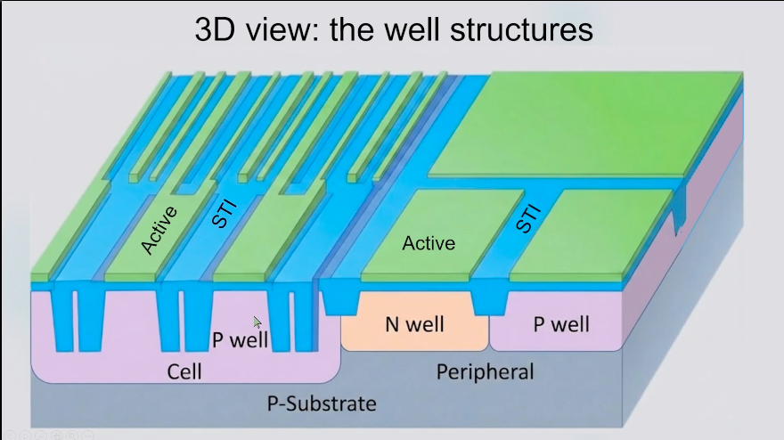
- 녹색 부분은 아직 Nitride로 덮여 있지만, 이후에 벗겨내고 Transistor로 만들 예정이다.
Q. 문턱전압을 세팅하는 VT-Adjust Implant는 결국 Channel을 세팅하기 위한 이온주입 과정인가?
A. 맞다. 문턱전압(Vt)은 게이트-반도체 일함수 차이, 산화막 커패시턴스와 함께 채널 표면 도핑 농도에 의해 결정된다. Well 형성 단계의 도핑만으로는 목표 Vt(예: NMOS 1.2V, PMOS -0.7V)를 정밀하게 맞추기 어렵기 때문에, 채널이 형성될 아주 얕은 표면 영역에 소량의 도펀트를 추가로 정밀 주입해 미세 조정하는 것이 VT-Adjust Implant다.
12. 셀 트랜지스터(BCAT) 구조 진화 — 상세
12-1. Planar → RCAT
초창기 평면형(Planar) MOSFET은 채널이 작아질수록 단채널 효과(Short Channel Effect)로 심각한 누설전류가 발생. 이를 해결하기 위해 채널 영역을 오목하게 깎아내고(Recess) 그 안에 게이트를 삽입하는 RCAT(Recess Channel Array Transistor)가 도입됨. 채널이 U자형으로 우회하며 실효 채널 길이가 증가 → 대기(standby) 상태에서도 누설되는 오프전류(off-current)를 줄여 DRAM의 핵심 성능 지표인 Retention Time(데이터 유지시간)을 지켜냄.
12-2. RCAT → BCAT
BCAT(Buried Channel Array Transistor) = 매립 채널 트랜지스터. Recess를 더 깊게 파고 금속(텅스텐) 게이트 전극을 완전히 매립한 뒤 절연체인 실리콘 나이트라이드로 덮어 밀봉.
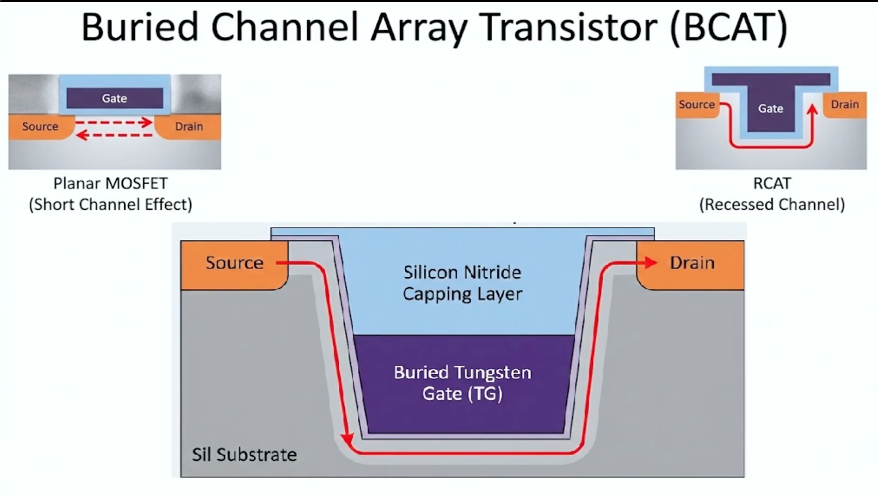
- 이제 DRAM의 심장인 Cell Transistor를 만드는 과정을 배워보자.
- 이전에는 Planar MOSFET이었지만, Short Channel Effect로 인해 누설전류 문제가 생겼다.
- 이를 극복하기 위해 RCAT 방식을 사용하게 되었다. Recessed(매립된, 움푹 들어간) 지역에 Gate를 위치시킨다. 그렇게 Channel이 돌아가며 길어지는 효과를 만들어냈고, 대기 중 누설되는 Off Current가 많아 Retention Time을 깎아먹던 문제를 해결했다.
- BCAT은 최근에 사용하는 방법이다. Gate가 묻혀 있기 때문에 인접한 두 트랜지스터 간의 간섭이 최소화된다. RCAT에서는 전극이 위로 솟아 있어 Bit Line과 Word Line 간의 Coupling이 비교적 심하게 일어날 수 있는데, 이렇게 묻어버리면 상부의 Bit Line과의 Coupling이 최소화된다. 또한 전체적으로 평탄해지기 때문에 후공정에도 유리하다.
| 비교 항목 | RCAT | BCAT |
|---|---|---|
| 게이트 형태 | 일부만 매립, 상단 노출 | 완전 매립 + Nitride 캡핑 |
| 인접 셀 간섭 | 상대적으로 큼 | 전극이 내부에 묻혀 간섭 최소화 |
| Bitline-Wordline 커플링 | 게이트가 위로 솟아 있어 커플링 심화 우려 | 게이트가 평탄화되어 커플링 최소화, 후공정에 유리 |
Q. Poly-Si는 여전히 실리콘인데, 왜 BCAT 이전(RCAT까지)에는 게이트에 "금속처럼" 사용될 수 있었을까?
A. 결정성(단결정 vs 다결정)이 아니라 도핑 농도가 핵심이다. 채널로 쓰이는 단결정 Si는 비교적 옅게 도핑되어 전형적인 반도체로 거동하지만, 게이트용 Poly-Si는 증착 후 As/P/B 등으로 극도로 진하게(~10²⁰~10²¹/cm³) 도핑되어 페르미 준위가 전도대·가전자대 안으로 들어가는 축퇴(Degenerate) 상태가 된다. 이 상태에서는 전기적으로 거의 금속처럼 행동한다. 다만 진짜 금속보다 저항이 높고 Poly Depletion Effect, Boron Penetration 같은 한계가 있어 "Poly-Si Gate"라 부르며 금속 게이트와 구분한다.
Q. 애초에 왜 (Al 같은) 금속 대신 Poly-Si를 써야 했을까?
A. MOSFET은 원래 Al 게이트로 시작했지만, Source/Drain 형성 후 필요한 고온(1000℃ 이상) 활성화 열처리를 Al(녹는점 660℃)이 견디지 못해 문제였다. Poly-Si는 내화성이 있어 "게이트를 먼저 만들고 → 그 게이트를 마스크로 S/D를 자기정렬 주입하고 → 고온 열처리"까지 이어지는 Self-Aligned Gate 공정을 가능케 했다. 이후 산화막이 얇아지며 Poly Depletion·High-k 계면 문제가 불거지자, 텅스텐처럼 내화성이 높은 금속이나 Gate-Last(Replacement Metal Gate) 공정으로 다시 금속 게이트로 전환되었다 — 이번 BCAT의 텅스텐 게이트가 그 결과물이다.
12-3. 도입 역사 (영상 내 언급)
- RCAT: 약 2005년경 도입, 80~90nm 노드에서 본격 적용. 삼성전자는 약 2006년경 50나노급 DRAM에 RCAT 어레이를 양산 적용한 것으로 알려짐
- BCAT: 2010년대 초 20~30nm 노드부터 주류 기술로 자리잡음. 현재 10세대 DRAM(1x/1y/1z = 4·5·6세대, 1a/1b/1c = 4·5·6세대 표기)까지 핵심 채널 구조로 계속 사용 중
- V-CAT(Vertical Channel Array Transistor) 예고: 소스·드레인이 수직으로 배치되어 전류가 위→아래로 흐르는 차세대 구조. 미래 4F² DRAM에서 중요한 역할을 할 것으로 전망 (영상에서 향후 다룰 예정으로 언급)
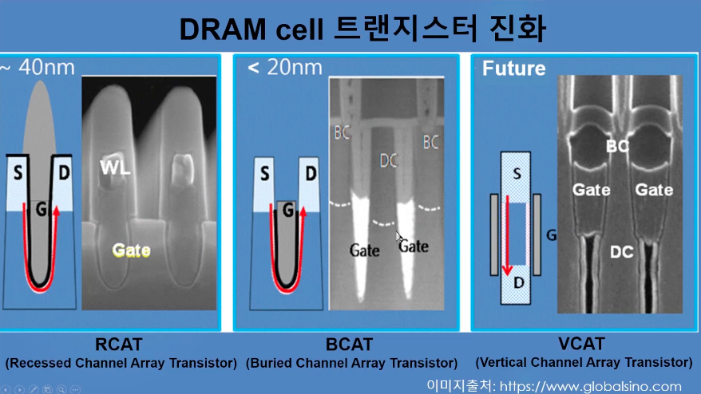
- SEM 사진이며, RCAT은 2005년경부터 적용되기 시작했다. 80~90나노에서 본격적으로 도입되었고, 삼성전자는 2006년경 50나노급에서 RCAT을 처음 양산에 도입했다.
- BCAT은 Gate가 완전히 매립되어 있으며 Si₃N₄으로 덮여 있음을 알 수 있다. 2010년대 초반부터 20~30나노 노드에서 주력 기술로 자리 잡았고, 10나노급 DRAM에서 1x/1y/1z(1·2·3세대), 1a/1b/1c(4·5·6세대) DRAM에 이르기까지 핵심 채널 구조로 계속 사용되고 있다.
- VCAT은 Source와 Drain이 일직선 구조로 되어 있는 수직 구조다. 차세대 DRAM의 구조가 될 것이라고 한다.
13. BCAT(매립 게이트) 제작 공정 — 셀 영역
- 다층 하드마스크 스택: 약 150nm의 깊은 식각을 견디기 위해 SiON + 두꺼운(100nm 이상) Spin-On 하드마스크 + 반사방지막(BARC)을 순서대로 적층 후 리소그래피용 PR 코팅
- Peri 영역은 하드마스크·PR로 계속 덮어 보호 — 이 영역은 나중에 별도 공정(Planar / High-k Metal Gate)으로 트랜지스터가 만들어질 공간으로 남겨둠
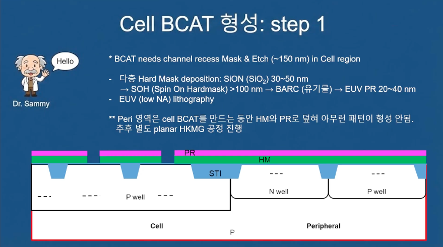
- PR을 통해 Etch를 진행할 부분만 남겨둔다. 150nm 정도 깊이로 식각해야 하기 때문에 이를 견딜 만한 다층 Hard Mask가 필요하다. 그래서 SiON 30~50nm와 Spin-On Dielectric(Hard Mask)을 100nm 이상 깔아준다. 그 위에 반사방지막인 유기물 계열 BARC를 깔고 EUV로 노광을 진행한다.
- 이때 Peri 지역에서는 PR을 닫아두는데, Cell 지역에서 BCAT을 만드는 동안 Peri에서는 다른 형태의 Transistor를 만들 것이기 때문이다. 그래서 저렇게 Hard Mask와 PR을 덮어둔 것이다.
- 나중에 Peri 지역에서는 Planar Transistor를 만들 것인데, High-k Dielectric을 사용할 것이다.
Q. SiON은 SiO₂와 어떻게 다를까? 그리고 PR도 Etch를 막아줄 텐데 왜 Hard Mask를 따로 쓰고, BARC는 어디에 어떻게 증착되는 걸까?
A. SiON(Silicon Oxynitride)은 SiO₂의 산소 자리 일부를 질소로 치환한 화합물로, SiO₂(낮은 유전율·응력)와 Si₃N₄(높은 유전율·치밀함) 중간의 성질을 O:N 비율로 조절할 수 있어 반사방지 기능과 적당한 내식각성을 동시에 갖는다. PR은 리소그래피 해상도는 뛰어나지만 긴 Deep Etch를 견딜 내식각성은 부족하다. 그래서 PR로는 얇고 정밀한 패턴만 만들고, 그 패턴을 내식각성이 훨씬 강한 무기물 Hard Mask(SiON, SOH 등)에 전사한 뒤, 실제 깊은 식각은 Hard Mask가 버티게 한다. BARC(Bottom Anti-Reflective Coating)는 PR 바로 아래·Hard Mask 스택 바로 위에 위치하며(이번 스택 기준 Si → SiON → SOH → BARC → EUV PR 순), 노광 시 아래층에서 반사되는 빛을 흡수해 정재파 간섭에 의한 패턴 왜곡을 막는다. PR과 같은 방식인 스핀 코팅으로 증착된다.
- 리소그래피 + 하드마스크 오픈: Cell 영역의 Recess가 형성될 자리만 PR·하드마스크 오픈
- 딥 실리콘 식각(DRIE): DRIE(Deep Reactive Ion Etching)로 수직 방향의 깊은 Recess 형성 — 이것이 매립 채널(Embedded Channel)의 핵심 구조
- 게이트 절연막(High-k) 증착: ALD(Atomic Layer Deposition)로 원자층 단위 증착. 일반적으로 지르코늄옥사이드(ZrO₂) 적층 구조 또는 ZrO₂+Al₂O₃(알루미늄옥사이드) 조합 사용 — 트렌치가 좁고 깊어 곡면을 따라 균일한 막을 형성할 수 있는 ALD 기술이 진가를 발휘하는 지점
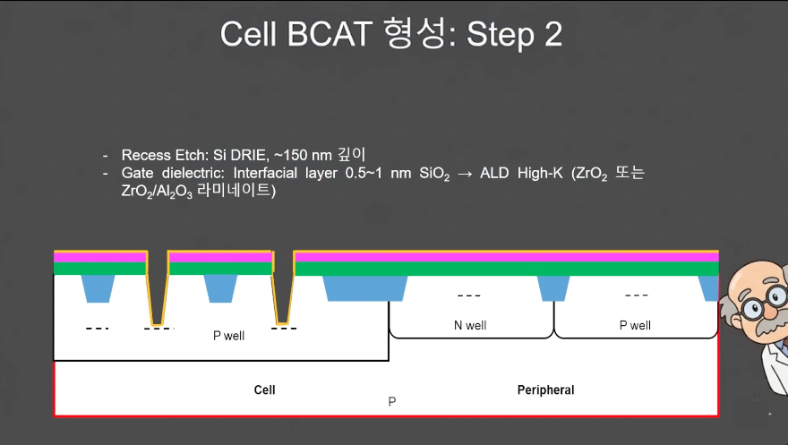
- Lithography가 끝났고 Hardmask가 열렸기 때문에 Si을 깊게 Etching한다. 이때 수직으로 150nm 정도 깊이를 Etch하기 위해 Deep RIE 방식을 사용한다.
- 이렇게 Etch를 하면 이미 Recess(움푹 파인)된 구조가 만들어진 것이다. 이제 그러면 금속 전극을 올려야 하는데, 반도체와 금속 사이에는 뭐가 있어야 할까? 절연체가 있어야 한다!
- 박사님은 Channel과 금속 사이에 Oxide가 들어가야 한다고 설명하셨는데, 본질은 같다. 다만 Channel을 "반도체"라 부르기보다 "Channel"이라 부르는 게 더 엄밀한 표현이기 때문이다.
- 그래서 노랗게 보이는 부분이 High-k Dielectric을 입히는 것이다. 보통 ZrO₂나 ZrO₂/Al₂O₃를 겹겹이 쌓은 라미네이트 구조를 사용한다. 트렌치가 매우 좁기 때문에, ALD를 통해 굴곡진 면을 따라 원자층 단위로 균일하게 막을 입힐 수 있는 기술이 빛을 발한다.
- 그리고 번외로 보호막 PR 위에도 함께 증착되는데, 이는 나중에 제거해 줄 것이라고 한다.
- 게이트 전극(텅스텐) 매립: ALD/CVD로 텅스텐을 트렌치 끝까지 채운 뒤, 에치백(Etch-back)으로 목표 깊이까지 다시 깎아냄
- Nitride 캡핑: 실리콘 나이트라이드로 게이트 상부를 덮어 밀봉 — 이후 형성될 Bit Line과의 간섭을 차단하는 핵심 단계 ("뚜껑을 덮는 작업")
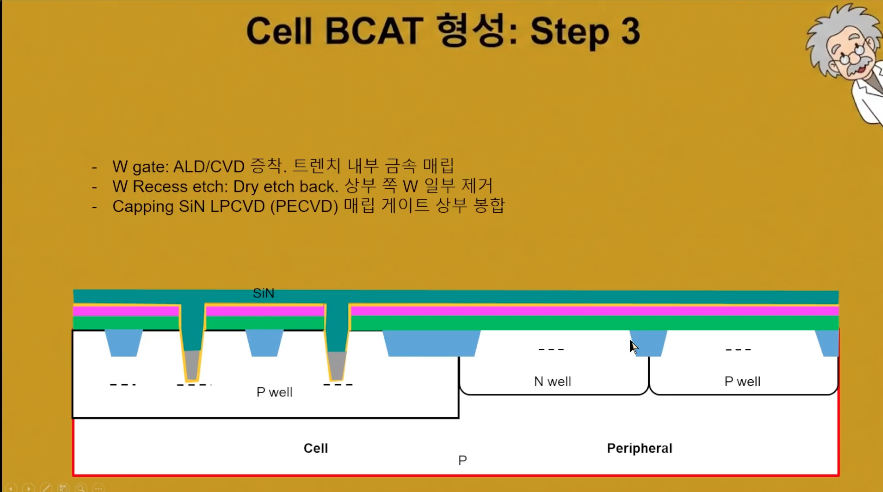
이제 이 매립형 Gate 내부에 전극을 심어야 한다. ALD와 CVD 중 선택하여 텅스텐을 Trench 내부까지 채워준다. 한 번 쫙 채우면 표면 전체를 덮고 있겠지만, Etch-back을 진행한다. 그러고 나서 다시 SiN, 즉 Capping을 덮어준다.
Q. 여기서 W을 증착할 때 CVD 방식을 쓰는 게 맞을까? Cu는 다마신+전해도금을 쓴다고 배운 것 같은데 둘의 차이가 궁금하다.
A. 맞다. 텅스텐은 WF₆ + 3H₂ → W + 6HF 반응을 이용한 CVD로 증착하며, 좁고 깊은 고종횡비 구조(BCAT의 매립 게이트, Contact/Via Plug 등)를 컨포멀하게 채우는 데 강점이 있다. 반면 구리(Cu)는 건식 식각이 사실상 불가능해, 절연막에 트렌치·비아를 먼저 파고 그 안을 채우는 Damascene 공정을 쓴다. 얇은 Seed층만 PVD/CVD로 깔고, 나머지 벌크는 저비용·보이드 없는 Bottom-up Fill이 가능한 전해도금(Electroplating)으로 채운 뒤 CMP로 평탄화한다. Cu는 확산 속도가 빨라 소자를 오염시킬 수 있어 도금 전 Ta/TaN 등 Diffusion Barrier가 필수다. W은 좁은 구조의 매립(FEOL/MEOL 성격), Cu는 BEOL 다층 배선(M1 이상)의 저저항 배선에 주로 쓰인다.
- CMP 평탄화: 트렌치를 덮은 Nitride 캡핑층과 주변 불필요막·잔여 하드마스크를 화학기계적으로 연마하여 평탄화
- 세정:
- Ceria(세리아) 슬러리 — CMP 후 잔류하는 실리카 입자·금속 오염물 제거
- 인산(H₃PO₄) 용액 — 잔류 Nitride막 제거
- BOE(Buffered Oxide Etchant, 희석 HF) — 불필요한 산화막 제거
- RCA 표준 세정으로 최종 마감 → 깨끗하고 완전한 BCAT 셀 구조 완성
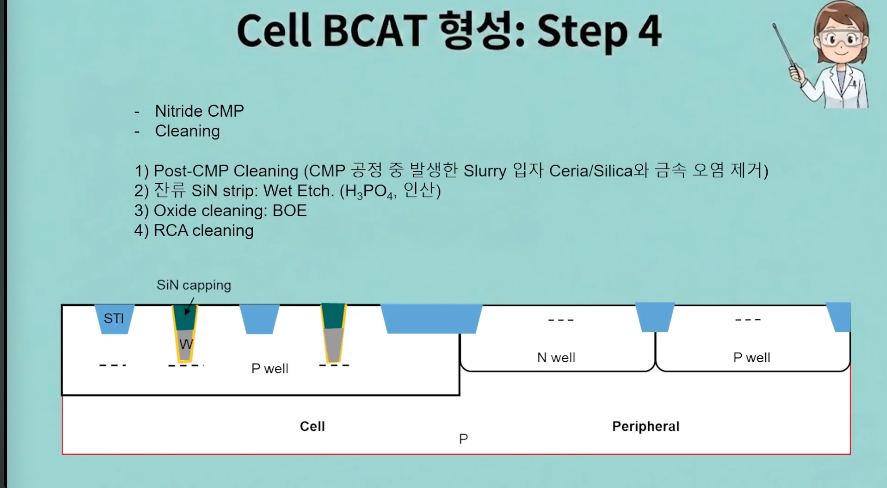
- 이제는 위에 덮여 있던 SiN을 CMP로 정리해 준다. (내 생각에 원래는 SiN이 Etch Stopper로 쓰이니까, SiN용 CMP가 따로 있지 않을까 싶다)
- 그래서 SiN, 불필요한 산화막, Hard Mask를 전부 기계적·화학적으로 연마해 준다.
- CMP를 했으니 표면이 더럽기 때문에 Cleaning 과정이 필수적이다. Slurry 입자인 Ceria와 Silica, 금속 오염을 제거해 주고, 잔류할 수 있는 SiN은 인산을 이용한 Wet Etch로 진행한다.
- 불필요한 산화막은 BOE를 통해 전부 없애준다.
- 그리고 이제 표면을 RCA로 Cleaning해 주면 된다.
14. 셀 트랜지스터 Source/Drain 형성
- ArF 리소그래피로 Cell 영역의 S/D가 형성될 자리만 PR 오픈, 나머지는 PR로 보호
- N형 도펀트(비소 또는 인) 주입으로 Source/Drain 형성
- 자기정렬 임플란트(Self-Aligned Implant): 게이트가 두꺼운 Nitride로 캡핑되어 있어, 임플란트가 게이트 위에 놓여도 문제되지 않고 자연스럽게 Nitride 경계 양쪽으로 정확한 위치에 Source/Drain이 형성됨 — 별도 정렬 공정 불필요
- PR 완전 박리 + 세정 → 전류가 흐를 준비가 된 완전한 Cell 트랜지스터 완성
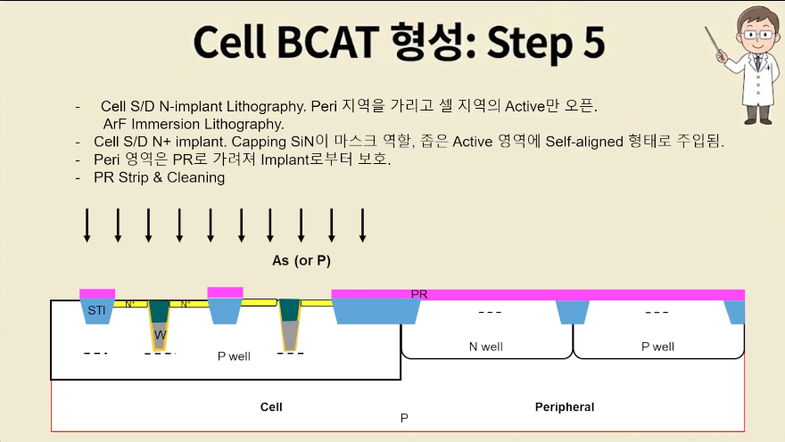
- 지금까지는 Cell 트랜지스터의 Gate는 만들어졌지만, 아직 Source와 Drain은 만들어지지 않았다. 그래서 이제 이온 주입을 진행해서 Source·Drain을 만들어준다.
- 먼저 N-type 도핑을 진행할 P-well 부분만 PR을 열어서 As 또는 P 도핑을 진행한다.
- 여기서 하나 알아둬야 하는 개념이 Self-Aligned 개념인데, Gate 위에 존재하는 SiN 때문에 도핑을 하더라도 상관이 없다? 양쪽 Source, Drain 쪽으로 간다?? ㅇㅇ 스스로 정렬된다고 한다.
- 역할을 다한 PR은 Strip을 진행하고, Cleaning을 통해 깔끔하게 만들어준다.
15. Peripheral 트랜지스터 형성
15-1. Cell 영역 보호
완성된 Cell 영역을 Buffer Oxide + Silicon Nitride로 덮어 보호 (리소그래피+식각으로 Peri 영역만 오픈) — Peri 트랜지스터 제작 중 Cell 영역에 추가 구조물이 생기지 않도록 사전 밀봉.
15-2. Peri 게이트 스택 형성
- Tungsten Nitride(WN) 증착 (배리어층) → Polysilicon → Tungsten → Silicon Nitride 하드마스크 순서로 적층
- 리소그래피(ArF 또는 EUV 공정)로 게이트 패터닝
- RIE(반응성 이온 식각)로 게이트 커팅 — 염소(Cl₂) 또는 브롬(Br₂) 계열 가스 기반 식각
- PR 제거 → Peri 영역(로직 회로)의 "두뇌" 역할을 할 게이트 완성
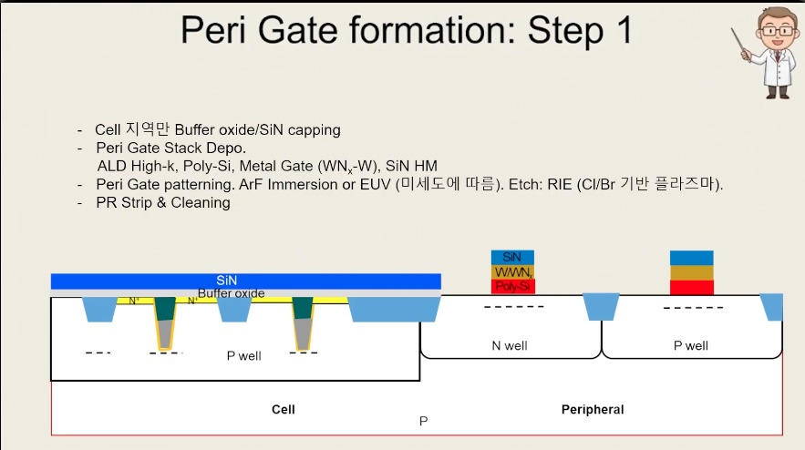
- 이제는 Peri 영역에 Transistor를 만들 차례다. 근데 이미 만들어 둔 Cell 영역에 영향을 미치면 안 되기 때문에, Buffer Oxide와 SiN을 덮어 보호해 준다.
- 그러면 이제 Peri 지역을 열어 주고, Poly Silicon과 Tungsten Nitride라는 배리어를 먼저 쌓은 다음 텅스텐 게이트를 올린다. 그다음 SiN이라는 하드마스크를 올린다.
- SiN이 있기 때문에 리소그래피를 진행하면 Gate가 ArFi, EUV 공정을 통해 패터닝되고 Etch를 진행한다. RIE를 진행할 때는 Cl이나 Br 계열을 사용한다.
15-3. LDD(Lightly Doped Drain) 구조 형성
발표자는 LDD 구조를 "Hot Carrier Effect(핫 캐리어 효과)에 의한 단채널 부작용을 억제하기 위한 구조"로 설명하며, 별도 영상으로 심화 예정임을 예고.
- NMOS: 스페이서 형성 전, 게이트 옆에 약하게 도핑된 N⁻(N-minus) 영역 주입 → 훗날 LDD 구조가 됨
- PMOS: 동일한 방식으로 P⁻(P-minus) 영역 주입
15-4. Nitride 스페이서 형성
Silicon Nitride를 증착 후 비등방성(Anisotropic) 식각으로 게이트 측벽만 남기는 스페이서(Spacer) 형성.
15-5. 본 Source/Drain 임플란트 + Halo(Pocket) 임플란트
- 스페이서 바깥쪽으로 더 깊고 진하게 N⁺(NMOS) 또는 P⁺/Boron(PMOS) 임플란트하여 최종 Source/Drain 형성
- Halo(Pocket) Implant: 회색으로 표시된 영역으로, 비스듬한 각도로 주입하여 단채널 효과(Short-Channel Effect)를 억제하는 역할
15-6. 활성화 열처리
- 임플란트 완료 후 활성화 열처리가 반드시 필요
- Spike RTA(Rapid Thermal Annealing) 또는 Laser Spike Annealing(LSA) — 단 몇 초 만에 950~1050℃ 근처까지 도달하는 매우 빠른 열처리로 도펀트를 활성화 (과도한 확산 방지)
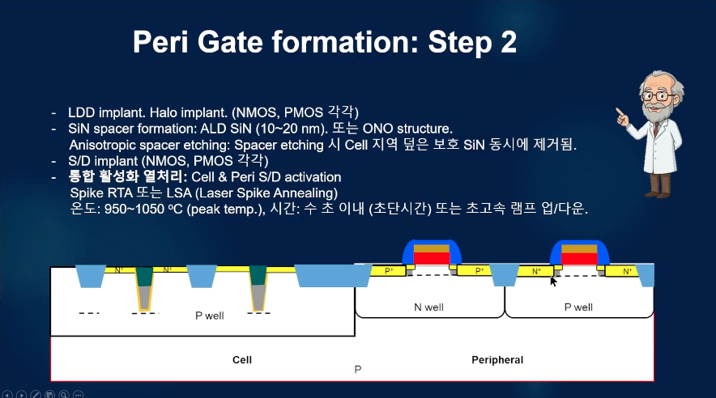
- 그림에서 파란색 Nitride 구조의 Spacer가 만들어지기 전에, N⁻로 N type으로 약하게 도핑을 한다고 한다. 그러면 나중에 이게 LDD 구조가 되며, Hot Carrier Effect를 억제하는 구조이다. P⁻로 P type으로도 약하게 도핑을 하는데, 둘 중 왼쪽(NMOS)을 이야기하는 것이다.
- SiN을 증착하고 Anisotropic하게 식각해 주면 Gate 측벽을 둘러싼 Spacer가 만들어진다.
- 회색으로 보이는 부분이 Pocket Implant(Halo Implant)라는 것으로, Short Channel Effect를 막기 위해 경사지게 Implant를 진행한다.
- 이렇게 Implant를 한 다음에는 활성화 열처리가 필요하다. 이때는 매우 짧은 시간 동안 급속 열처리를 진행한다. 1000℃ 부근에서 Spike RTA 또는 LSA(Laser Spike Annealing)를 통해 수 초 동안 높은 온도로 급속 진행해서 활성화시켜 준다.
16. FEOL 공정 완료
활성화 열처리를 끝으로 트랜지스터 제작의 전체 여정, 즉 FEOL(Front-End of Line)이 마무리된다.
- Cell 영역: BCAT(매립 게이트) 트랜지스터 완성
- Peri 영역: 평면형 High-k Metal Gate NMOS/PMOS(CMOS) 완성
다음 편(3부)에서는 Bit Line과 Capacitor — DRAM의 "꽃"이라 불리는 MEOL 핵심 공정을 순차적으로 다룰 예정.
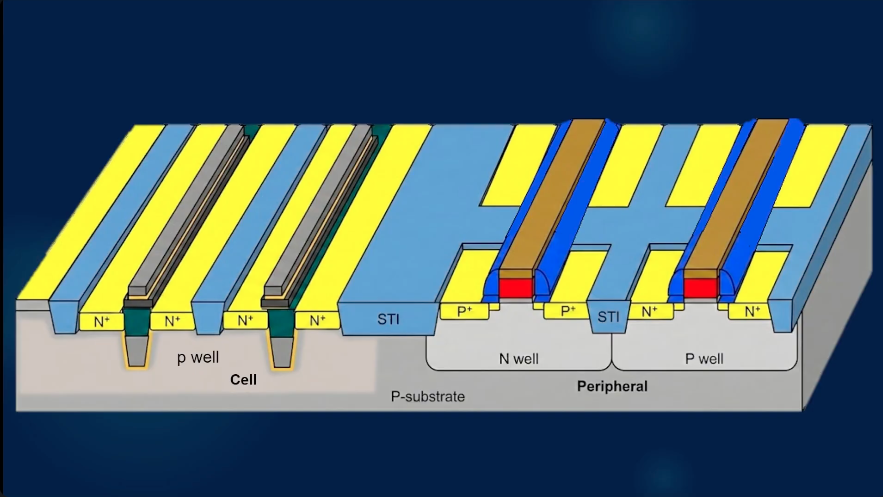
- 이를 통해 전공정, 즉 FEOL 공정이 끝나게 된다.
17. 전체 공정 요약 흐름
18. 용어 정리표
| 용어 | 의미 |
|---|---|
| FEOL / MEOL / BEOL | Front/Middle/Back-End of Line — 기판~트랜지스터 / 비트라인·커패시터 / 금속배선 공정 단계 |
| STI | Shallow Trench Isolation — 트렌치를 파고 산화막을 매립하는 소자분리 기술 |
| LOCOS | Local Oxidation of Silicon — 구형 소자분리 기술, Bird's Beak 결함 존재 |
| Bird's Beak | LOCOS 공정 중 산화막이 옆으로 파고들어 활성영역을 잠식하는 현상 |
| HDP-CVD | High Density Plasma CVD — 고밀도 플라즈마를 이용한 산화막 증착법 (갭필용) |
| CMP | Chemical Mechanical Polishing — 화학기계연마, 표면 평탄화 공정 |
| N-well / P-well | PMOS/NMOS가 위치할 국소 반대 도핑 영역 |
| Deep N-well(DNW) | 기판과 분리를 위해 깊은 곳에 형성하는 N형 웰 |
| Vt (Threshold Voltage) | MOSFET이 켜지기 시작하는 문턱전압 — 균일성이 매우 중요한 파라미터 |
| VT-Adjust Implant | 문턱전압을 미세 조정하기 위해 채널 영역에 주입하는 임플란트 |
| RCAT | Recess Channel Array Transistor — 채널을 파내 게이트를 삽입, 유효채널 길이 증가 |
| BCAT | Buried Channel Array Transistor — 게이트를 완전 매립+Nitride 캡핑한 10nm급 표준 구조 |
| V-CAT | Vertical Channel Array Transistor — 차세대 수직채널 구조 (4F² DRAM 후보) |
| DRIE | Deep Reactive Ion Etching — 깊고 수직적인 식각이 가능한 건식식각 기법 |
| ALD | Atomic Layer Deposition — 원자층 단위로 증착, 좁고 깊은 트렌치에 균일한 막 형성 가능 |
| High-k 유전체 | ZrO₂, Al₂O₃ 등 유전율이 높은 절연물질 — 게이트 절연막으로 사용 |
| Self-Aligned Implant | 별도 정렬 없이 기존 구조(Nitride 캡 등)를 기준으로 자연히 정확한 위치에 형성되는 임플란트 |
| LDD | Lightly Doped Drain — 약하게 도핑된 드레인 확장 구조, Hot Carrier Effect 억제 |
| Halo(Pocket) Implant | 단채널 효과 억제를 위해 비스듬히 주입하는 임플란트 |
| Spike RTA | Rapid Thermal Annealing — 수 초 만에 고온(~1000℃)에 도달하는 급속 열처리, 도펀트 활성화용 |
| BOE | Buffered Oxide Etchant — 희석된 불산(HF) 용액, 산화막 선택적 제거용 |
| 4F² DRAM | 셀 면적을 최소 단위(4F²)까지 줄인 차세대 DRAM 설계 목표 |